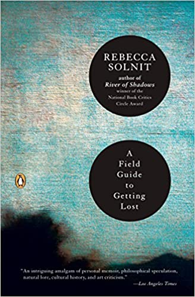

Jan 22, 2020
A Field Guide to Getting Lost
by Rebecca Solnit
This was another purchase while rummaging at the book store. I’ve read Solnit‘s „Men explain things to me“ a couple of years ago. And since I really enjoyed that one, I wanted to read another one of her works. I’m not usually one for essays so it was definitely a different experience from reading more science related books.
I thoroughly enjoyed reading „A Field Guide to Getting Lost“ even though (or maybe because of?) I often found myself getting lost myself in an essay and wondering what’s the point she’s trying to be bring across. It was also at times deeply emotional to read for me as I was reminded of personal loss (or the fear of it) with many of her essays.